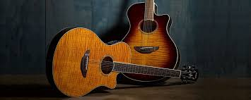

Esta es la guitarra acustica
Cuerdas de acero: Producen un sonido más brillante y fuerte que las cuerdas de nylon de la guitarra clásica.
Caja de resonancia: Amplifica el sonido de las cuerdas, creando un tono más fuerte y lleno.
Mástil: Suele ser más estrecho que el de la guitarra clásica, lo que facilita el acceso a los trastes.
Diapasón: Tiene trastes para facilitar la ejecución de notas específicas.
Puente: Une las cuerdas al cuerpo y transmite la vibración a la caja de resonancia.
Clavijero: Permite afinar las cuerdas.
Sonido: Se caracteriza por un tono brillante, potente y proyectado.
Versatilidad: Se utiliza en una amplia variedad de géneros musicales.
Portabilidad: No requiere amplificación, por lo que es más fácil de transportar.

Esta es la guitarra acustica